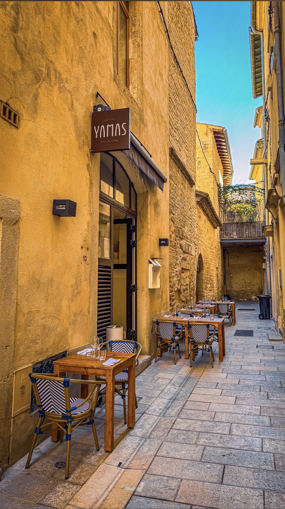
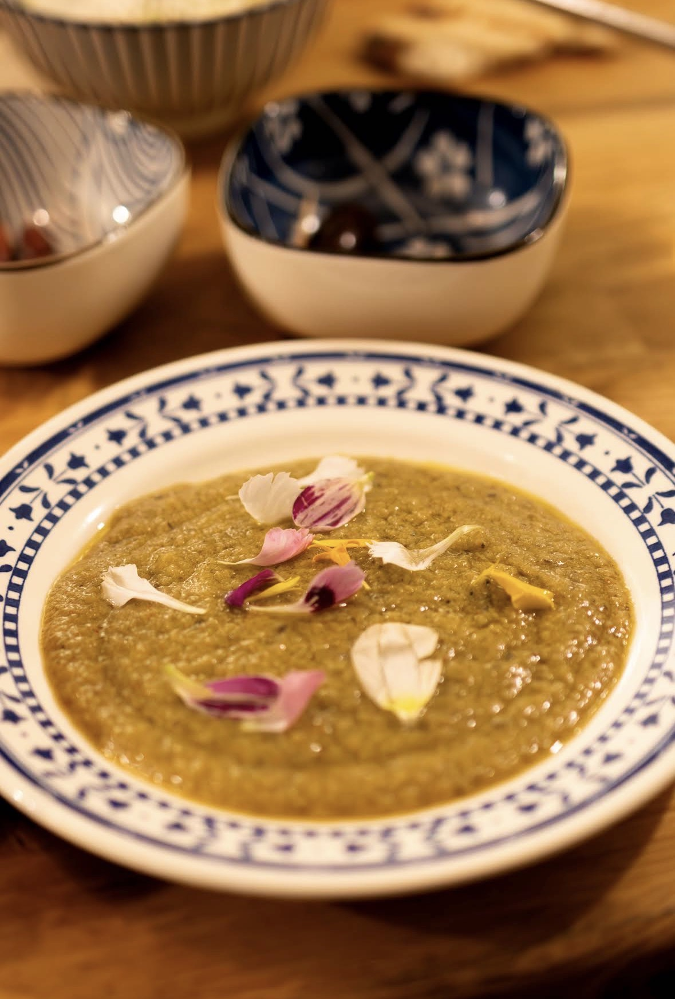
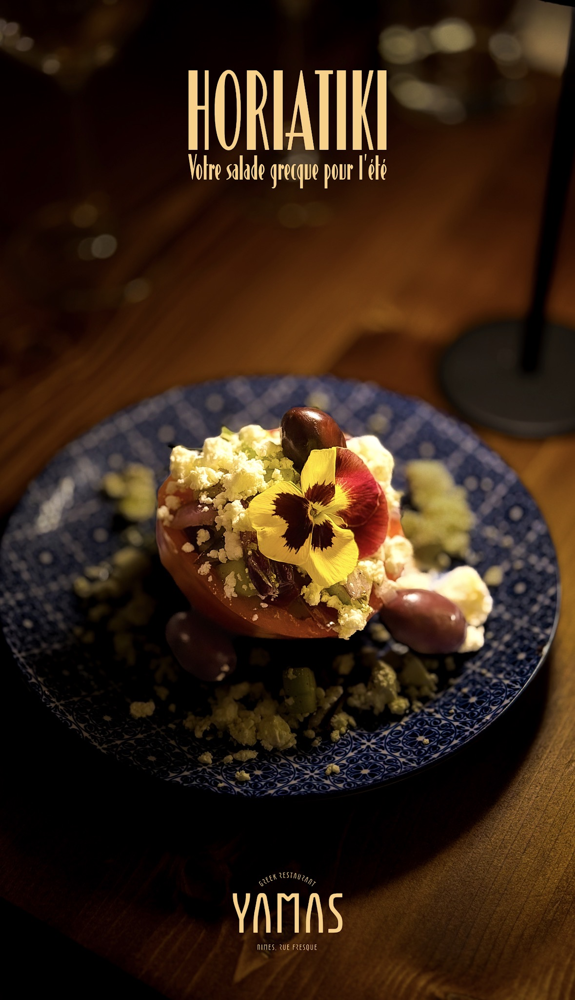
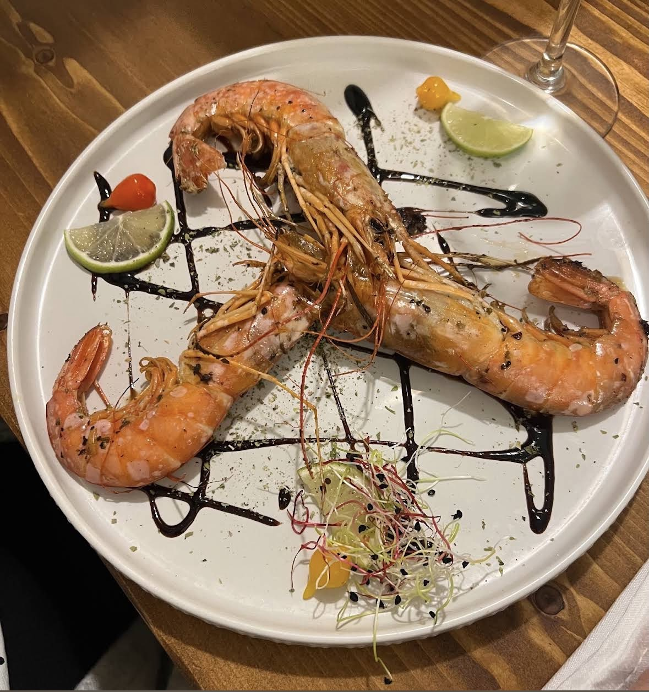

Cuisine grecque, produits locaux
& convivialité méditerranéenne

Καλώς ήρθατε — Bienvenue
Nichée dans une ruelle de pierre au cœur de Nîmes, la table de Yamas célèbre la Grèce des tavernes : des mezzes à partager, des grillades généreuses et des vins choisis, dans un décor simple et chaleureux.
Ici, tout est fait maison, au rythme des saisons et des producteurs de la région. On lève son verre, on partage, on prend le temps — Yamas !

Fait maison, tout simplement

Le plat de l'été
Votre salade grecque pour l'été
Tomates de pays, concombre, olives de Kalamata, oignon rouge et feta, simplement relevés d'origan et d'une belle huile d'olive.
Réserver une tableÀ la table de Yamas

Στην υγειά μας — À la nôtre
15 rue Fresque
30000 Nîmes
Mardi – Samedi
12h00 – 14h00 · 19h00 – 22h30